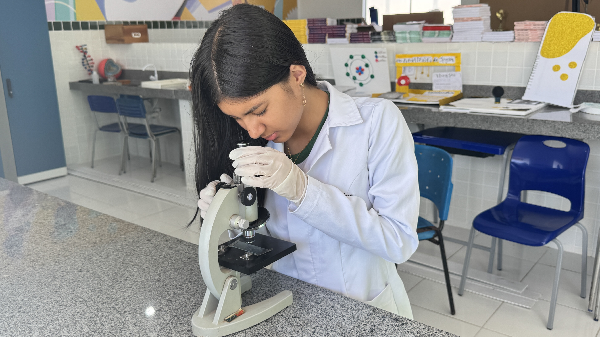
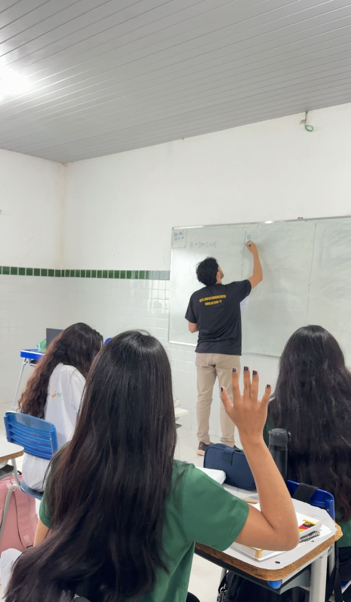
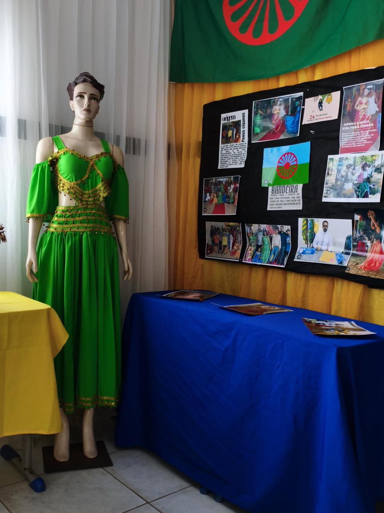
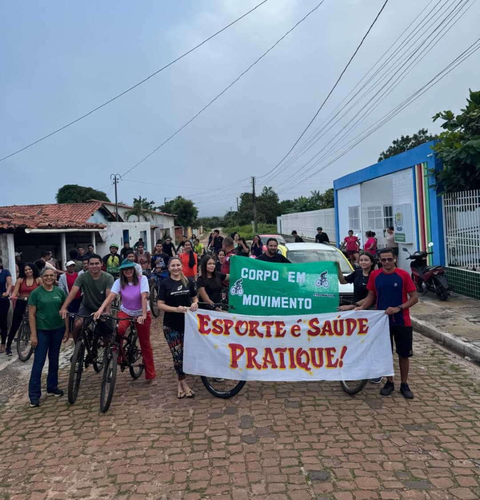

O CETI Job de Macêdo Brito oferece uma grade curricular completa, com disciplinas que desenvolvem competências intelectuais, sociais e profissionais. As aulas são ministradas por professores qualificados e abrangem as áreas de Linguagens, Matemática, Ciências da Natureza, Ciências Humanas e Formação Técnica.
A disciplina de Química explora a matéria e suas transformações de forma prática e dinâmica. Com experimentos divertidos e conteúdos extensivos, os alunos entendem fenômenos do cotidiano e desenvolvem o pensamento crítico e científico.
Saber maisExplora os fenômenos naturais como biologia, química e física. A disciplina desenvolve o pensamento crítico e a compreensão da importância da ciência no dia a dia e na preservação do meio ambiente.
Saber mais

Desenvolve o raciocínio lógico, o pensamento analítico e a resolução de problemas. A disciplina é fundamental para entender o mundo ao nosso redor e para diversas áreas do conhecimento, além de preparar para o mercado de trabalho e estudos futuros.
Saiba mais
Disciplina que desenvolve a escrita, ensinando a organizar ideias, construir argumentos e produzir textos claros, coerentes e bem estruturados.
Saber maisCultura e arte estimulam a criatividade, a expressão pessoal e o conhecimento das diversas manifestações culturais, valorizando a identidade e a diversidade.
Saber mais
Educação física promove a saúde, o bem-estar e o trabalho em equipe por meio de atividades esportivas e exercícios físicos.
Saber mais